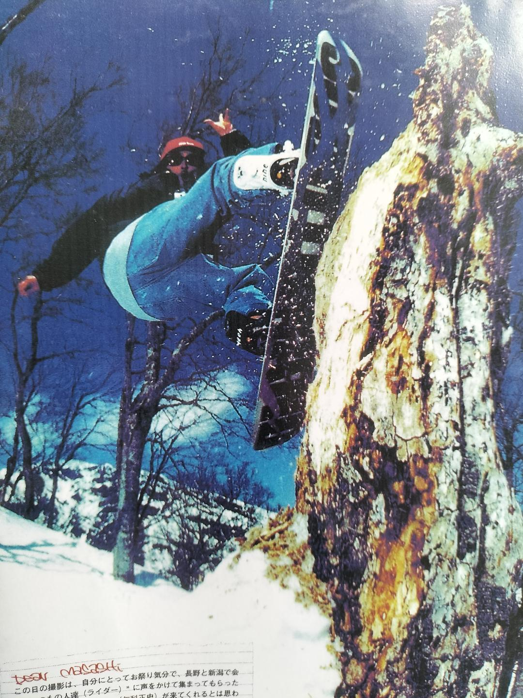
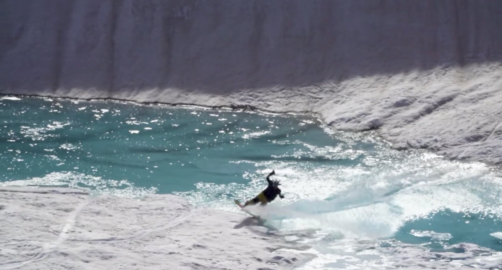
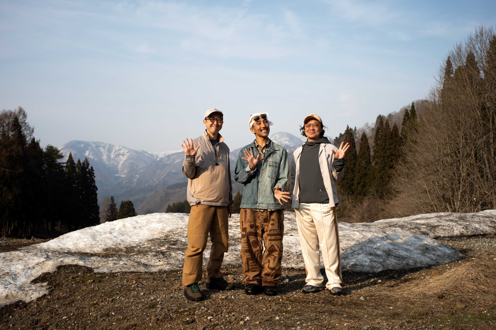

「死を、教えてくれ。」 コンテンツとして強烈な光を放つ（ことになるはず）この企画だが、その道のりは、文字通りキワの連続だ。Surfing / Skateboard / Snowboard 業界で20年、 Street Culture にもまれた僕が、人生の大きな転換期を経て「株式会社まなか」の仏壇事業部に飛び込んだのが少し前。企業としての新しいコミュニケーションかつ人間の根源的な問いに迫るドキュメンタリーを作ろうと意気込んだものの、その壁はあまりにも高い。
死というテーマも Street Culture の仲間なら、このセッションも軽やかにこなすと思っていたが、現実は甘くはない。死というあまりにもストレートで逃げ場のない言葉で前では、皆、少し身構え、すぐに Yes と言ってくれない。初期キャスティングはことごとく暗礁に乗り上げ、連絡が途絶えるカメラマンも現れる始末。
転職早々、企画のアイデアだけが宙に浮き、孤独が重くのしかかり、足元が音を立てて崩れるような感覚だ。
編集後記
「キワから、戻してくれ。」
Place: 株式会社まなか 銀座オフィス
Words: 荒井 道広
荒井、大地に立つ。死のキワより引き返した場所は、宮嶋が、唐揚げを食したバーミヤン。 「死を、教えてくれ。〜仁科正史〜」 編集後記
死という重いテーマに気付き、キワに立つ日々
羅針盤: 石原"ROCKY”寛規、そして携帯電話を持たない男
2025/12/19
暗闇の中で手探りを続けていると、ひと筋の光が差し込んだ。前職で一緒だった、石原"ROCKY"寛規 。ロッキー君に、この企画の本質と現状をぶつけたとき、彼は頷き、静かに言った。
「正史さんなら、やってくれる、かもっス」

ロッキー君がすぐに連絡してくれた、さすが仕事が早い。
がしかし、仁科まさしの応答は無く留守電へと切り替わる。
「ゴ用件ヲ オハナシクダサイ… ピィーーーーーッ…」
なんだか懐かしい。
そう。 仁科正史は、携帯電話を持っていない――。
その後連絡が取れるも、これはやはり、会いに言って話すべき内容だと判断。ロッキー君が巧みに動いてくれたおかげで、ようやく仁科正史にアプローチするという機会が整った。
2026/01/09
年明け早々。降雪を考えるとスケジュールは秒読みだ。
ロッキー君が担当する VOLCOM ブランドの展示会直前のわずかな勝負どきの隙間を狙い、朝イチから白馬へと VAN をブッ飛ばす。白馬エリアへと入ったと同時に、正史さんに電話を入れるも電話に出ない。あの留守電へと切り変わ理、不安がよぎる。しかし、折り返しの電話がきて少し安堵した。
白馬の自然と対峙しながら生きるような正史さんの圧倒的な存在感を前にしながら、僕たちは大町市にある彼のアトリエに通された。そして約2時間にわたり、これまでの僕や、この企画をまっすぐに説明した。
「死」というテーマを前にしても、彼は臆することなく真摯に、そして驚くほど柔らかく耳を傾けてくれた。正史さんに触れ「この人となら創れるな」という確信を得たのを鮮明に覚えている。
アトリエを後にした帰り道、正史さんオススメのそば屋「高瀬川」に立ち寄る。勝手にしていた緊張感から解放された後のそば、しみわたるほど美味かった。
冷徹な現実と、シナリオ「地獄のハイクダウン」
2026/01/28
銀座に戻り、すぐの会議で報告。基本承認を得たものの、そこからシナリオ作成が決まらない。タイムスケジュールとプロ基準がのしかかる。
出来たシナリオ第1案、「経営陣がリアルにバックカントリーの撮影現場に同行し、生きるを再確認」 しかし、仕上がったシナリオを正史さんに説明したとき、プロのフィードバックが飛んできた。
「バックカントリーなので、最低限の装備は持ってる？ 何よりも、相応のライディングスキルが備わっていなければ、あの危ない環境には連れていけないな」
――しまった… 一歩間違えば命に関わる本物のフィールドなのに、経営陣を軽く同行させるなんて甘過ぎる。
正史さんは正論であり、僕の甘い見立てをココイチで言う13辛付近まで一気に引き上げた。バックカントリーに必要な装備はツテで調達できるとしても、経営陣のライディングスキルを確認しないと。
2026/02/11
入山は出来ないのか？ しかし、引き下がるわけにはいかない。
導き出したのが、狂気とも言えるシナリオ第2案。
ハイクアップをして到着する場所は、圧倒的な銀世界と急斜面。絶対に滑走などできないだろう―― つまり「ビビって滑れず、引き返すしかない」という予測に基づいた構成案。経営陣は引き返し、正史さんだけが圧倒的なスキルとスピードで美しく滑り降りていく。
名づけて「地獄のハイクダウン」。綺麗なプロモーション映像の対極にある、圧倒的な実力差と、自然の脅威の前で、死とは？を問う。
僕は、生々しいドキュメンタリーができるかもしれないぞと勝手に尖り、1人で熱を帯びていた。
消えゆく雪、迷う社内、そして前夜の絶望
2026/02/27
試練はまだ終わらない。
2月も終了だが、シナリオが着地しない。無情にも時間は進む。今シーズンは降雪が少ないようで、雪解けが日を増して気になる。バックカントリー撮影そのものが物理的に不可能になりつつあり、「このままでは終わる」という焦りがピークになるのが分かる。そんな状況だと、決まって明け方が眠れない。そして、一つの記憶が蘇る。
「正史さんのフィルム（天地）で見たアレを取り入れたらどうか――」
そのフィルム、天地では雪溶けの水面を、スノーボードで滑走する様が収められている。雪が溶けて水になり、蒸発して雲になり、再び白馬に雪として還ってくる。この循環も表現すれば、「死」というテーマに留まらず、命の循環へと昇華するじゃん！
この裏テーマを据えることで企画の奥行きは深まり、諦めかけた僕が再起動した。

https://www.youtube.com/watch?v=uL4lWT8e_9s
2026/03/10
何故だ？ 社内には届かない。
前例のない尖ったコミュニケーションに加え、多忙を極める皆のスケジュール調整。
最初にこれを掲げた副社長・宮嶋も、「本当にこれで進めていいのか」という自身の再確認が良い意味で生じてきているようにも感じられ、なかなか最終承認が下りない。
2026/03/15
刻一刻とタイムリミットが迫る。
日程をずらすとまさかの雨予報。
正史さんへの連絡も、編集チームも、これ以上は引っ張れない。
目の前なのに、社内を動かせないなんて。
もう、無理だ。
明日の会議で白紙に戻そう。スケジュールをバラすしかない。
駄目だったか——
迷ったら、バーミヤン四谷店で唐揚げを食え
2026/03/16
運命の当日。13時からの会議の前に社長・宮嶋に呼ばれ、「ちょっと話そうよ」と、何故かバーミヤン四谷店へと足を運ぶ。
「この場で話してしまおう、チームにも早く謝りたいし」 そう思いながら最後尾を歩く。
テーブルを囲み、湯気の立つ料理を前にしても僕は大した感情が出ない。そんな中、社長・宮嶋がやおら箸を伸ばして唐揚げを食う。美味そうに食べながら、一言の合図。
「白馬さぁ、今どんな感じなの〜〜！？」
社長・宮嶋の陽気な一言で、フリーズしていた空気が少しづつ動き出していく。
「まぁ、どうなるか分かんないけどさぁ！ やってみようよ」
迷いが吹き飛び、ようやく光が差しこめた瞬間が訪れる。それは、とても暖かい光。
前夜、もうダメだと、すべてを手放そうとキワに居た。
そのキワギリギリで引き戻してくれたのは、ほかならぬバーミヤン四谷店の唐揚げと、あの一言。
整ったプロットも、予定調和も無い。
泥臭い葛藤とキワをくぐり抜けた「死を、教えてくれ。〜仁科正史〜」
正解の無いドキュメンタリーが、ようやく動き出す——。
